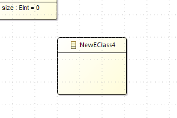
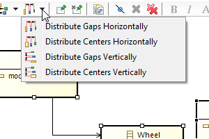

When I have a look to what is the status of the Sirius project today, one soundtrack is running through my mind :
«Harder, Better, Faster, Stronger»:

It is a great day, within the announcement of Eclipse Mars, many great projects are released. Sirius 3.0 is part of this train.
When I have a look to what is the status of the Sirius project today, one soundtrack is running through my mind :
«Harder, Better, Faster, Stronger»:
One first fact, looking at the project’s statistics, the Sirius team worked hard on this release to deliver some new cool features and fix the existing ones:
| Version | Date | Total Closed | Feature Requests |
| 1.0.0(Luna) | June 14 | 100 | 2 |
| 1.0.1 | Aug 14 | 20 | - |
| 2.0.0 | Oct 14 | 113 | 27 |
| 2.0.1 | Nov 14 | 2 | - |
| 2.0.2 | Dec 14 | 15 | - |
| 2.0.3 | Jan 15 | 16 | - |
| 2.0.4 | Feb 15 | 8 | - |
| 2.0.5 | Apr 15 | 8 | - |
| 3.0.0(Mars) | Jun 14 | 213 | 35 |
| 426 | 64 |
Their purpose was to make a better tooling for the end user and to improve the diagram user experience. This work started with Sirius 2.0 and some of the following features are there since this version.


| Snap To Shape enabled by default for new diagrams |

|
| Snap To Grid now used when an element is created |  |
| Resize no longer change ports or children’s location |

|
| Actions to distribute shapes |  |
| Action to reset the diagram origin |
|


GOAL : 1 MILLION MODEL ELEMENT
CONSTANT IMPROVEMENTS
|Time (sec) Heap (Mb) Time Variation Heap Variation
|Open Huge Project 80 276 -31,00% -20,00%
|Open Big Class Diagram 11 24 -54,00% +20,00%
|Refresh Big Class Diagram 0,731 0 -18,00% 0,00%
|Save After Diagram Change 26 0 -23,00% 0,00%
|Close Diagam 0,1 -6 0,00% 0,00%
|Close Project 55 294 0,00% 0,00%
Workspace class loading is BACK
Image path validation and selection wizard
Quick Outline
Prioritized sub menus
...
What is the type of var:source?
Type analysis within the action language
REQUIRES STRONGER TYPE INFORMATION FROM INTERPRETERS
Reference support in aql:
Implemented in feature:, var:
Improvements in [/]
No support in legacy <%%> and ocl:
Let’s the Daft punk conclude this post :
Report on the bugzilla
"More than ever
Hour after
Our work is
Never over"